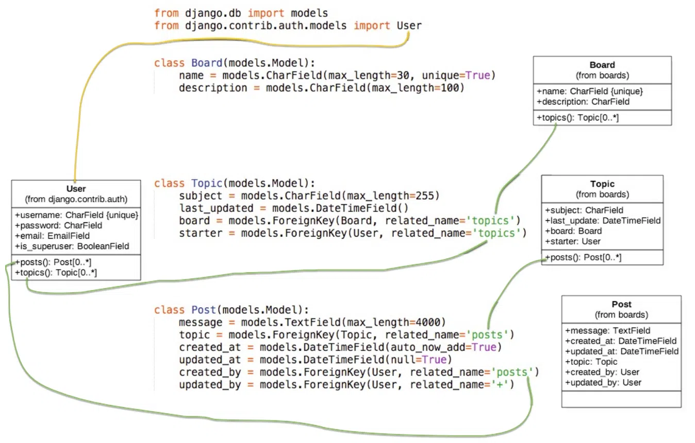

本文最后更新于：2021年9月14日 凌晨
模型 这些模型基本上代表了应用程序的数据库设计。在本节中要做的是创建 Django 所表示的类，这些类就是在上一节中建模的类∶ Board，Topic和 Post。User 模型被命名为内置应用叫 auth，它以命名空间 django.contrib.auth 的形式出现在 INSTALLED_APPS配置中。
我们要做的工作都在 boards/models.py 文件中。以下是我们在Django应用程序中如何表示类图的代码∶
1 2 3 4 5 6 7 8 9 10 11 12 13 14 15 16 17 18 19 20 21 22 from django.db import modelsfrom django.contrib.auth.models import Userclass Board (models.Model ):30 , unique=True )100 )class Topic (models.Model ):255 )True )'topics' , on_delete=models.CASCADE)'topics' , on_delete=models.CASCADE)class Post (models.Model ):4000 )'posts' , on_delete=models.CASCADE)True )True )'posts' , on_delete=models.CASCADE)True , related_name='+' , on_delete=models.CASCADE)
所有模型都是django.db.models.Model类的子类。每个类将被转换为数据库表 。每个字段由 django.db.models.Field子类（内置在Django core）的实例表示，它们并将被转换为数据库的列。
字段 CharField，DateTimeField等等，都是 django.db.models.Field 的子类，包含在Django的核心里面-随时可以使用。
在这里，我们仅使用 CharField``，TextField ，DateTimeField，和ForeignKey字段来定义我们的模型。不过在Django提供了更广泛的选择来代表不同类型的数据，例如 IntegerField，BooleanField， DecimalField和其它一些字段。
我们会在需要的时候提及它们。
有些字段需要参数，例如CharField。我们应该始终设定一个max_length 。这些信息将用于创建数据库列。Django需要知道数据库列需要多大。该 max_length 参数也将被Django Forms API用来验证用户输入。
在 Board 模型定义中，更具体地说，在 name 字段中，我们设置了参数 unique=True ，顾名思义，它将强制数据库级别字段的唯一性。
在 Post 模型中， created_at 字段有一个可选参数， auto_now_add 设置为 True 。这将告诉Django创建 Post 对象时为当前日期和时间。
模型之间的关系使用 Foreignkey 字段。它将在模型之间创建一个连接，并在数据库级别创建适当的关系 （注∶ 外键关联）。该 Foreignkey 字段需要一个位置参数 related_name ，用于引用它关联的模型。（注∶ 例如 created_by 是外键字段，关联的User模型，表明这个帖子是谁创建的， related name=posts 表示在 User 那边可以使用 user.posts 来查看这个用户创建了哪些帖子）
例如，在 Topic 模型中， board 字段是 Board 模型的 ForeignKey 。它告诉Django，一个 Topic 实例只涉及一个Board实例。 related_name 参数将用于创建反向关系， Board 实例通过属性 topics 访问属于这个版块下的 Topic 列表。
Django自动创建这种反向关系， related_name 是可选项。但是，如果我们不为它设置一个名称，Django会自动生成它∶（class_name）_set 。例如，在 Board 模型中，所有 Topic 列表将用 topic_set 属性表示。而这里我们将其重新命名为了 topics ，以使其感觉更自然。
在 Post 模型中，该 updated_by 字段设置 related_name='+'。这指示 Django我们不需要这种反向关系，所以它会被忽略（注∶也就是说我们不需要关系用户修改过哪些帖子）。
下面您可以看到类图和Django模型的源代码之间的比较，绿线表示我们如何处理反向关系。

迁移模型 下一步是告诉Django创建数据库，以便我们可以开始使用它。打开终端，激活虚拟环境，转到 manage.py文件所在的文件夹，然后运行以下命令∶
python manage. py makemigrations
你会看到输出的内容是∶
Migrations for 'boards' :
此时， Django 在 boards/migrations 目录创建了一个名为 0001_initial.py 的文件。它代表了应用程序模型的当前状态。在下一步，Django将使用该文件创建表和列。
迁移文件将被翻译成SQL语句。如果您熟悉SQL，则可以运行以下命令来检验将是要被数据库执行的SQL指令
python manage.py sqlmigrate boards 0001
如果你不熟悉SQL，也不要担心。所有的工作都将使用Django ORM来完成，它是一个与数据库进行通信的抽象层。下一步是将我们生成的迁移文件应用到数据库∶
输出结果如下：
1 2 3 4 5 6 7 8 9 10 11 12 13 14 15 16 17 18 19 20 21 22 Operations to perform:all migrations: admin, auth, boards, contenttypes, sessions.0001 _initial... OK.0001 _initial... OK.0001 _initial... OK.0002 _logentry_remove_auto_add... OK.0003 _logentry_add_action_flag_choices... OK.0002 _remove_content_type_name... OK.0002 _alter_permission_name_max_length... OK.0003 _alter_user_email_max_length... OK.0004 _alter_user_username_opts... OK.0005 _alter_user_last_login_null... OK.0006 _require_contenttypes_0002... OK.0007 _alter_validators_add_error_messages... OK.0008 _alter_user_username_max_length... OK.0009 _alter_user_last_name_max_length... OK.0010 _alter_group_name_max_length... OK.0011 _update_proxy_permissions... OK.0012 _alter_user_first_name_max_length... OK.0001 _initial... OK.0001 _initial... OK
好了数据库就迁移成功了。
试验 Models API 使用Python进行开发的一个重要优点是交互式shell。我一直在使用它。这是一种快速尝试和试验API的方法。
可以使用manage.py工具加载我们的项目来启动 Python shell ∶
这与直接输入 python 指令来调用交互式控制台是非常相似的，除此之外，项目将被添加到 sys.path 并加载Django。这意味着我们可以在项目中导入我们的模型和其他资源并使用它。
让我们从导入Board类开始∶
from boards.models import Board
要创建新的 board 对象，我们可以执行以下操作∶
board = Board(name='Django' ,description='This is a board abo ut Django.' )
为了将这个对象保存在数据库中，我们必须调用save方法∶
save 方法用于创建和更新对象。这里Django创建了一个新对象，因为这时 Board 实例没有id。第一次保存后，Django会自动设置ID∶
您可以将其余的字段当做Python属性访问∶
>>> board.name'Django' >>> board.description'This is a board about django'
要更新一个值，我们可以这样做∶
board.description ='Django discussion board' >>> board.description 'this is new description'
每个Django模型都带有一个特殊的属性；我们称之为模型管理器（Model Manager）。你可以通过属性 objects 来访问这个管理器，它主要用于数据库操作。例如，我们可以使用它来直接创建一个新的Board对象∶
>>> board = Board.objects.create(name='Python' , description='id 2 for django model' )>>> board.save()>>> board.id 2
所以，现在我们有两个版块了。我们可以使用 objects 列出数据库中所有现有的版块
>>> Board.objects.all ()object (1 )>, <Board: Board object (2 )>]>
结果是一个QuerySet。稍后我们会进一步了解。基本上，它是从数据库中查询的对象列表。我们看到有两个对象，但显示的名称是 Board object。这是因为我们尚未实现 Board 的 __str___ 方法。
_str__ 方法是对象的字符串表示形式。我们可以使用版块的名称来表示它。
首先，退出交互式控制台∶
现在编辑boards app中的 models.py 文件:
class Board (models.Model ):30 , unique=True )100 )def __str__ (self ):return self.name
再进入交互台，查询：
<class 'boards .models .Board '>>>> Board .objects .all () <QuerySet [<Board : Django>, <Board: Python>]>
这样是不是好多了呢。
我们可以将这个QuerySet看作一个列表。假设我们想遍历它并打印每个版块的描述∶
boards_list = Board.objects.all () >>> board_list = Board.objects.all ()>>> for board in board_list:... print (board.description)... is new descriptionid 2 for django model
同样，我们可以使用模型的 管理器（Manager）来查询数据库并返回单个对象。为此，我们要使用 get 方法∶
>>> django_board = Board.objects.get(id ='1' )>>> django_board>>> django_board.name'Django' >>> django_board.description'this is new description'
但我们必须小心这种操作。如果我们试图查找一个不存在的对象，例如，查找id=3的版块，它会引发一个异常∶
>>> django_board = Board.objects.get(id ='3' ) not exist.
get 方法的参数可以是模型的任何字段，但最好使用可唯一标识对象的字段来查询。否则，查询可能会返回多个对象，这也会导致异常。
Board.objects.get(name='Django' )
请注意，查询区分大小写，小写”django”不匹配∶
Board.objects.get (name='django' )not exist.